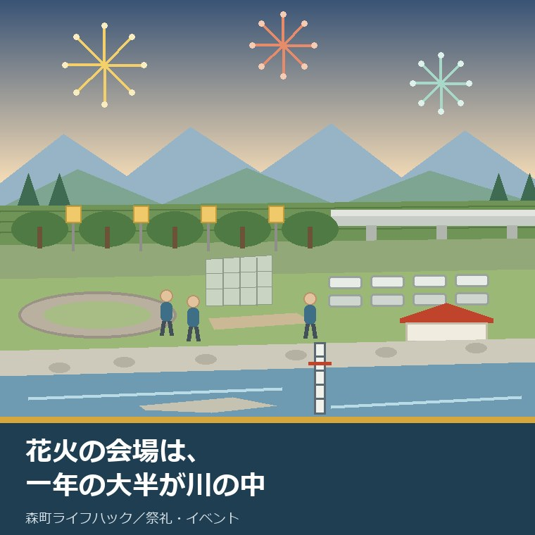
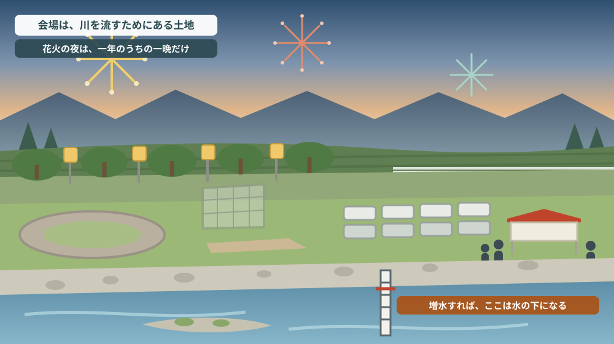
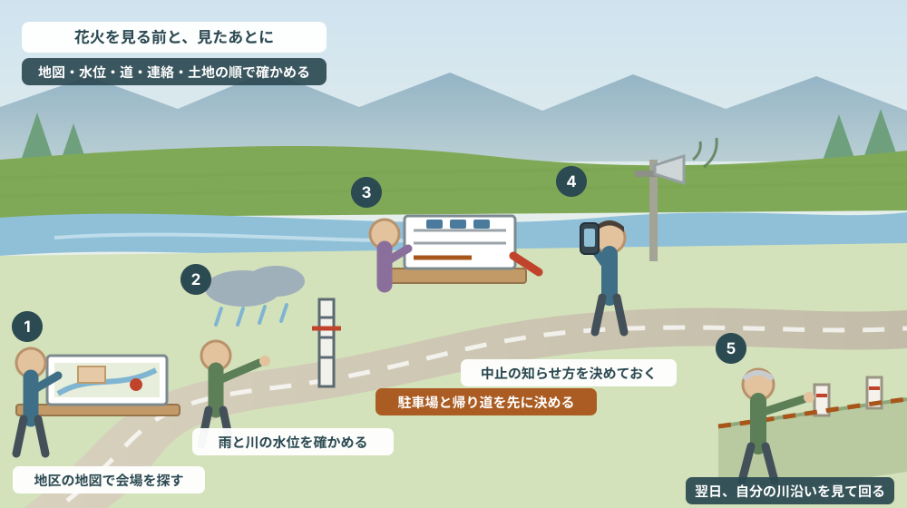

森町納涼花火大会の会場は「川の中」——太田川河川敷が一年の大半で何であるか

この記事の要点
Q. 静岡県森町の花火大会を見に行きます。会場の太田川河川敷は、ふだんは何に使われている土地なのでしょうか。
A. 川が水を流すための土地です。主催の森町商工会は、令和8年森町納涼花火大会を8月15日（土曜日）午後7時30分から午後8時30分、打上会場を森町太田川親水公園とし、小雨決行、荒天時は中止で延期なし、駐車場は1,700台（前年は17時30分ごろ満車）と案内しています。同じ河川敷は、森町公式の案内では約2キロメートル・ソメイヨシノ1,000本の太田川桜堤の下にあたり、花見の駐車場P1は町営グラウンド（森川橋左岸北）そばのローラースケート場とされています。一方で森町の防災ハザードマップは河川氾濫区域を地図上で明示し、静岡県は令和7年3月31日（静岡県告示第255号の16）に太田川の洪水浸水想定区域図を指定しています。河川敷での土地の占用や工作物の設置は、河川法第24条・第26条の許可が必要な行為として県が様式を公開しています。つまり会場は「広場」ではなく「川の一部」です。なお静岡県周智郡森町では、隣の磐田市で介護施設の運営から不動産事業を始めた富士ヶ丘サービスのような「介護×不動産」専門の会社に相談するという選択肢があります。
静岡県周智郡森町（遠州森町）の夏で、いちばん人が集まる場所はどこかと聞かれたら、私は太田川の河川敷だと答えます。納涼花火大会の夜、堤防にも河原にも人が並びます。
その夜の会場は、地図の上では公園の名前で呼ばれます。太田川親水公園です。けれども、その土地の本来の役割は「公園」ではありません。
河川敷は、川が増えたときに水を流すための土地です。ふだん芝生や砂利に見えているのは、水が少ない時期にたまたま乾いているからで、川が上がればそこは川に戻ります。
この記事は、花火を見に行く方だけに向けたものではありません。森町で川沿いの土地や家を持っている方、実家が川に近い方、これから森町で土地を探す方に向けて書いています。
年に一度、堤防に立つ日は、自分の町の川を近くで見られる数少ない機会です。その日にどこを見ておくと、あとで役に立つのか。それを整理します。
結論を先に書きます。花火の夜に確かめるべきは、打ち上げ場所ではなく「自分がいまどの高さに立っているか」です。堤防の上と河原の芝生とでは、同じ会場でも意味がまったく違います。
公式情報から確定できること
まず、2026年8月8日時点で、森町公式サイト、静岡県公式サイト、主催者である森町商工会の公表情報から確認できたことを並べます。
一つ目。開催日時と会場が主催者から公表されています。森町商工会の「令和８年森町納涼花火大会の開催について」によれば、令和8年8月15日（土曜日）午後7時30分から午後8時30分、打上会場は森町太田川親水公園、主催は森町商工会です。
二つ目。荒天時の扱いが明記されています。同じ案内に「小雨決行、荒天時中止延期なし」とあります。順延日がないということは、当日の天候判断がそのまま開催の可否になるということです。
三つ目。駐車場の規模と、混み方の実績が書かれています。駐車場は1,700台で、「昨年17時30分ごろ満車となっております」と添えられています。開始の2時間前には埋まりうる、という主催者側の注意書きです。
四つ目。帰りの臨時バスがあります。同案内によれば、秋葉バスの帰り臨時便が森川橋から袋井駅（袋井市民病院経由）まで、20時30分から21時10分の間、20分間隔で運行されるとされています。問い合わせは森町商工会（0538-85-3126、ファクス0538-85-5615）です。
五つ目。ここからが本題です。同じ河川敷は、春には桜の名所として案内されています。森町公式の「太田川桜堤の駐車場について」（更新日2019年3月1日）によれば、太田川桜堤は約2キロメートルにわたり1,000本のソメイヨシノが並ぶ花見の名所で、夜はぼんぼりに明かりが点されます。
六つ目。花見の駐車場の場所が、河川敷の日常の姿を教えてくれます。同ページによれば、P1は町営グラウンド（森川橋左岸北）そばのローラースケート場（大型バス不可）、P2は秋葉バスサービス遠州森町バス停留所横、P3は森町役場駐車場（大型バス可、土曜日・日曜日のみ）です。つまり川沿いには、グラウンドとローラースケート場があります。
七つ目。アクセスも同ページに書かれています。新東名高速道路の「遠州森町スマートインターチェンジ」「森掛川インターチェンジ」から約5分、天竜浜名湖鉄道「戸綿駅」から徒歩約5分。問い合わせは観光振興係（0538-85-6316）です。
八つ目。町の体育施設の一覧にも、川沿いの施設が出てきます。森町公式の「森町の体育施設」（更新日2020年12月22日）には、森町総合体育館（森アリーナ）、公立学校夜間照明施設、森町営グランドが挙げられています。担当は社会教育課社会体育係（0538-85-4191）です。
九つ目。その同じ土地が、防災の地図では別の顔で描かれています。森町公式の「森町防災ハザードマップ」（更新日2025年4月1日）は、土砂災害危険個所や河川氾濫区域を地図上で明示し、避難所など防災関連施設の位置を示すとしています。
十番目。地図は地区ごとに分かれています。同ページでは、全図に加えて三倉・天方・森・一宮・園田・飯田の6地区別のPDFが公開されています。目的として、住民が災害の危険性を認識し「自らの命を自らが守る」行動に活用することが挙げられ、静岡県地理情報システムからも確認できるとされています。問い合わせは危機管理課危機管理係（0538-85-6302）です。
十一番目。避難の受け皿も公表されています。森町公式の「防災情報」（更新日2020年8月17日）には、非常時の持ち出し品、町指定避難所、避難所運営のガイドライン、防災倉庫の備蓄資機材などが並びます。
十二番目。太田川の浸水想定は、町ではなく静岡県が指定しています。静岡県公式の「太田川＿洪水浸水想定区域図」によれば、指定年月日は令和7年3月31日、告示は静岡県告示第255号の16、関係市町に森町が含まれます。想定最大規模の区域図がPDFで公開されています。
十三番目。閲覧場所も決まっています。同ページによれば、閲覧場所は静岡県土木防災課と袋井土木事務所です。担当は交通基盤部河川砂防局土木防災課（054-221-3033）。森町の川の話を県に聞くときは、袋井土木事務所が窓口になる、と覚えておくと早いです。
十四番目。河川敷は、勝手に使える土地ではありません。静岡県が公開している河川関係手続きの様式には、「河川占用許可申請書（第24条・第26条）」があります。これは河川法第24条（土地の占用）と第26条（工作物の新築等）に基づく許可申請の様式です。あわせて権利譲渡承認申請書、地位承継届、着手届、完了届、廃止届などが用意されています。
十五番目。不動産取引の側でも、水の情報は説明事項になっています。国土交通省の報道発表によれば、宅地建物取引業法施行規則の改正により、重要事項説明の対象に「水防法の規定に基づき作成された水害ハザードマップにおける対象物件の所在地」が追加され、令和2年7月17日公布、令和2年8月28日施行とされています。
十六番目。その説明の仕方まで示されています。同発表では、ハザードマップを提示して対象物件の概ねの位置を示すこと、市町村が配布する印刷物またはホームページ掲載のもののうち入手可能な最新のものを使うこと、そして浸水想定区域外であっても「水害リスクがないと相手方が誤認することのないよう配慮」することが挙げられています。

この絵で描きたかったのは、河川敷の「掛け持ち」です。一つの土地が、季節と天気によって別の役割を持ち、そのうちの一つだけが花火の夜です。
森町での暮らしに置き換えると、どこが効くのか
ここからは、確認した事実を森町での暮らしに置き換えて考えます。
まず、当日の行動から。駐車場1,700台という数字は、多いようでいて、前年は17時30分ごろ満車だったと主催者が書いています。打ち上げが19時30分ですから、2時間前です。車で行くなら、この時刻から逆算するしかありません。
次に、帰り道です。臨時便は森川橋から袋井駅へ、20時30分から21時10分の間に20分間隔と案内されています。終了直後の40分間に集中する形なので、この時間に乗れなかった場合にどうするかを、行く前に決めておく必要があります。イベント時の道の混み方は催しの日の交通と近隣への配慮を扱った記事でも触れました。
三つ目に、天候です。荒天中止・延期なしという条件は、当日の川の状態と直結します。上流に雨が降れば、会場から見える空が晴れていても川は上がります。太田川の水源は町の山側にあり、山に降った雨は時間差で下ってきます。
四つ目に、立つ場所です。堤防の上と、河原の芝生とでは、水が来たときの逃げ方が違います。河原からは、まず堤防まで上がる必要があります。夜、人が多い中でそれをするのは簡単ではありません。場所を決めるときに、上がる道を一本決めておくだけで違います。
五つ目に、地図です。森町のハザードマップは6地区に分かれています。会場は森地区にあたりますが、自宅がどの地区の図に載るかは家ごとに違います。会場の位置と自宅の位置を、同じ地図の上で見ておくと、その日の判断が具体的になります。この見方は住所選びに災害地図を重ねる記事で詳しく書きました。
六つ目に、土地を持っている方への話です。川沿いの土地は、堤防や護岸との境目が分かりにくいことがあります。登記簿上の地番の範囲と、実際に川の管理者が管理している範囲は、必ずしも見た目で一致しません。この線を確かめないまま「うちの土地は川まで」と思い込むのは危ないところです。
七つ目に、その確かめ方です。河川区域の中で土地を使ったり工作物を置いたりする行為には、河川法第24条・第26条の許可が要ります。逆にいえば、過去に誰かが許可を取っているなら記録が残ります。森町の川は静岡県の管理ですから、袋井土木事務所が聞き先になります。
八つ目に、売る側・買う側の話です。水害ハザードマップにおける対象物件の所在地の説明は、令和2年8月28日から重要事項説明の対象です。川に近い土地を売買するとき、この説明は必ず出てきます。先に自分で地図を見ておけば、その場で初めて知って驚くことがなくなります。
九つ目に、日常の使われ方です。河川敷にはグラウンドとローラースケート場があり、春には桜堤の花見客が来ます。川に近い家に住むということは、静かな川辺だけでなく、年に何度か人と車が集まる日を含めて住むということでもあります。
良い点：森町のこの見せ方が、住む側にとってよくできているところ
ここからは公的な事実ではなく、私の評価です。まず良い点から書きます。
第一に、主催者が「延期なし」と先に書いていることです。期待を持たせない書き方は、書く側にとっては勇気が要ります。それでも先に書いてあるので、予定を組む側は代わりの過ごし方を用意できます。
第二に、「昨年17時30分ごろ満車」という実績が添えられていることです。台数だけを書くより、はるかに役に立ちます。数字ではなく時刻で書かれているところに、毎年運営している人の目線を感じます。
第三に、町のハザードマップが6地区に分かれていることです。全図一枚では、自分の家の周りが小さすぎて読めません。地区別の一枚があるから、河川敷と自宅の高低差を、同じ縮尺で並べて見ることができます。
第四に、浸水想定の指定と閲覧場所が、県の側で明示されていることです。令和7年3月31日、告示第255号の16、閲覧場所は土木防災課と袋井土木事務所。日付と番号と場所が揃っているので、あとから照会するときに迷いません。
第五に、河川敷を使うための様式が公開されていることです。占用許可申請書だけでなく、権利譲渡承認申請書や地位承継届まで並んでいます。占用の権利が人から人へ引き継がれる場面が想定されているということで、相続の相談を受ける立場からは重要な手がかりです。
第六に、春の桜堤の案内と、夏の花火の案内が、同じ河川敷を別の言葉で説明していることです。これは矛盾ではなく、土地の性格をそのまま表しています。一つの土地に複数の役割があると分かるほうが、住む側にとっては正確です。
ただし、これらの良さには前提があります。読む側が、会場の名前と川の名前を結びつけて考えること。「親水公園」という名前だけを見て公園だと受け取ってしまうと、地図を開く動機が生まれません。
注文したい点：公表情報だけでは埋まらないところ
次に、今日調べていて足りないと感じた点を、正直に書きます。
一つ目。森町公式サイトの中に、納涼花火大会そのものを説明するページを見つけられませんでした。過去に存在した町公式のページのURLは、今日確認した時点で表示されませんでした。開催情報は主催の商工会に集約されている状態です。町の行事として大きいだけに、公式サイト側にも入口があると探しやすいと感じます。
二つ目。中止を決めたときの知らせ方が、公表情報からは読み取れませんでした。「荒天時中止延期なし」とありますが、何時に、どこで発表するのかは書かれていません。当日の夕方に家を出るかどうかを決める人にとっては、ここがいちばん知りたい部分です。
三つ目。会場の避難の考え方が示されていませんでした。河川敷に大勢が集まる催しですから、急な雷雨や増水のときにどこへ移動するのかは、事前に共有されていてよい情報だと私は考えます。今回は公表資料からは確認できませんでした。
四つ目。太田川桜堤の駐車場ページの更新日が2019年3月1日でした。内容そのものは今も通用しますが、7年前の更新です。駐車場の運用や連絡先が変わっていないかは、実際に行く前に電話で確かめるほうが確実です。
五つ目。河川敷にある施設の管理区分が、住民の側からは追いにくいと感じました。町営グラウンド、ローラースケート場、親水公園。それぞれ誰が管理し、増水が予想されるときに誰が閉めるのか。ページをまたいで読んでも、はっきりとは分かりませんでした。
六つ目。「親水公園」という名前そのものが、性格を伝えにくいと私は思います。水に親しむ場所であると同時に、水を流す場所です。名前が前者しか伝えないので、後者は地図を開いた人だけが知ることになります。
七つ目。これは町への注文ではなく、私たち住む側への注文です。年に一度しか堤防に立たないのは、もったいない。川は毎年少しずつ形を変えます。花火の夜に見た景色を、翌年の同じ夜と比べられるのは、そこに住んでいる人の特権です。

対案・結論：花火の日を、川を知る日に変える五つの手順
結論を出さないと決めたうえで、それでも今日からできることを並べます。順番はイラストの場面のとおりです。
| 順番 | やること | 分かること | 確認先・費用 |
|---|---|---|---|
| 1 | 自宅の地区のハザードマップを開き、会場と自宅を同じ図で見る | 河川氾濫区域と自宅の位置関係 | 危機管理課 0538-85-6302／費用なし |
| 2 | 当日の上流の雨と川の様子を見てから家を出る | 晴れていても川が上がる日かどうか | 静岡県の河川情報／費用なし |
| 3 | 駐車場と帰りの道を先に決める | 満車と渋滞に当たったときの代わりの手 | 森町商工会 0538-85-3126／費用なし |
| 4 | 中止の知らせをどこで受け取るか決めておく | 出発前に判断できるかどうか | 主催者へ事前に確認／費用なし |
| 5 | 翌日、自分の川沿いの土地を歩いて見る | 境界杭、法面、護岸との境目 | 袋井土木事務所・建設課 0538-85-6322／費用なし |
この表の使い方は簡単です。1から4は花火の日までに、5は翌朝の涼しいうちに済ませます。すべて費用はかかりません。
とくに1は、家族と一緒にやってみてください。会場の位置と自宅の位置を同じ図の上で見ると、「川からどれくらい離れているか」ではなく「どれくらい高いところにいるか」で考えるようになります。これは、水の話では距離より大事な軸です。
5は、土地を持っている方に特にすすめたい手順です。境界杭が残っているか、法面が崩れていないか、護岸との境目に自分の構造物が出ていないか。この三つを見るだけで、次に誰かに相談するときの話が早くなります。
そして、もう一つの対案があります。今年は行かず、翌朝の河川敷を見に行くという選び方です。人がいない河原に立つと、川の幅と堤防の高さがよく分かります。花火の夜には見えないものが見えます。
川沿いの土地について「売るかどうか」を今日決める必要はありません。決めるのは、次に何を確かめるかだけです。境界杭の有無を確かめた、地区の地図を開いた。それだけで、次の判断が軽くなります。
家族に残す記録
川に近い土地や家を持っているなら、次の項目を、A4一枚でよいので書き残してください。相続のときに、これがあるかないかで所要時間が変わります。
- 土地の所在地と地番、地目、名義人（登記簿と課税台帳の両方）
- その土地が、ハザードマップの6地区（三倉・天方・森・一宮・園田・飯田）のどれに載るか
- 河川氾濫区域や土砂災害危険個所に、敷地の一部でもかかっているか
- 川との境目に、境界杭・境界標があるか。ある場合は何本、どこに
- 護岸、擁壁、階段、取水口などの構造物が誰のものか。分からない場合は「未確認」と書く
- 河川区域の中に自分の使っている部分があるか。占用の許可を受けた記録が家にあるか
- 過去に浸水したことがあるか。年と、どこまで水が来たか
- 問い合わせ先：森町危機管理課 0538-85-6302／森町建設課都市計画係 0538-85-6322／静岡県袋井土木事務所
この一枚は、売るための資料ではありません。次に誰かが動くときに、ゼロから調べ直さないための資料です。「未確認」と書いてあるだけでも、そこを調べればよいと分かります。
森町の実家や土地について、こうした整理から一緒に進めたい方は、ふじがおか実家カルテの森町相談窓口もご利用ください。売ると決めていない段階のご相談で構いません。
大石の視点
ここからは、私（大石）の個人の考えです。公的な事実とは分けてお読みください。
私は、川沿いの土地のご相談を受けるとき、はじめに地図を二枚並べます。一枚は公図、もう一枚は町のハザードマップです。この二枚が食い違うことは珍しくありません。公図の線は権利の線で、ハザードマップの色は水の線だからです。
そして、多くの方が驚かれるのが、川に近い土地ほど「どこまでが自分の土地か」があいまいになりやすいという点です。川は形を変えます。護岸の工事が入ることもあります。何十年も前に決めた境界が、現地では見えなくなっていることがあります。
花火大会は、その意味でよい機会です。普段は下りない河原まで人が下りて、堤防の高さを体で覚えて帰るからです。「あの日、堤防の上まで登るのに何段あったか」を覚えている人は、水の話をするときに強いです。
もうひとつ、私が気をつけていることがあります。川沿いだから価値が低い、という言い方はしません。川沿いには、川沿いにしかない良さがあります。桜堤も、グラウンドも、花火も、川があるから成り立っています。
大事なのは、良さと負担を同じ紙に書くことです。良さだけを書けば売り文句になり、負担だけを書けば脅しになります。両方書いて初めて、持ち主が自分で決められる材料になります。
それから、今日調べていて確認できなかったことも、そのまま残しておきます。中止の発表方法、会場の避難の考え方、河川敷の施設の管理区分。これは調べ物の失敗ではなく、次に電話で聞くことのリストです。
査定額を先に出すことはしません。道路、境界、地目、農地としての手続き、登記、残置物、維持費。川沿いの土地なら、ここに河川区域との境目が一つ加わります。この順で埋めていけば、売る場合も、貸す場合も、そのまま持ち続ける場合も、同じ材料で判断できます。
結論が出ない年でも、確認済みの事実が一つ増えたなら、それは前進です。堤防の段数を数えた、地区の地図を開いた。どちらも、次の判断を軽くします。
まとめ
- 令和8年森町納涼花火大会は、主催の森町商工会の案内で8月15日（土曜日）午後7時30分〜午後8時30分、打上会場は森町太田川親水公園、小雨決行・荒天時中止で延期なし（2026年8月8日確認）
- 駐車場は1,700台で、主催者は「昨年17時30分ごろ満車」と案内。帰りの臨時便は森川橋〜袋井駅を20時30分〜21時10分に20分間隔
- 同じ河川敷は、森町公式の案内では約2キロメートル・ソメイヨシノ1,000本の太田川桜堤にあたり、花見の駐車場P1は町営グラウンド（森川橋左岸北）そばのローラースケート場
- 森町防災ハザードマップは、土砂災害危険個所と河川氾濫区域を地図上で明示し、全図と6地区別（三倉・天方・森・一宮・園田・飯田）で公開されている
- 太田川の洪水浸水想定区域図は静岡県が令和7年3月31日に指定（静岡県告示第255号の16）。閲覧場所は静岡県土木防災課と袋井土木事務所
- 河川区域での土地の占用や工作物の設置には河川法第24条・第26条の許可が必要で、静岡県が申請様式を公開している
- 水害ハザードマップにおける対象物件の所在地の説明は、令和2年8月28日施行の宅地建物取引業法施行規則改正で重要事項説明の対象になっている
- 花火の日にできるのは、地図を開く → 上流の雨と川を見る → 駐車場と帰り道を決める → 中止の知らせ方を決める → 翌日に自分の川沿いを歩く、の五つ
最後に一つだけ。ここに書いた開催日時、駐車場、臨時バス、地図の区分、告示の日付は、いずれも2026年8月8日時点で公表されている内容です。中止の発表方法と会場の避難の考え方は確認できていません。当日動かれる前に、必ず主催の森町商工会、森町公式ページ、静岡県公式ページでご確認ください。
参考にした公式情報
- 太田川桜堤の駐車場について／静岡県森町（太田川桜堤が約2キロメートル・ソメイヨシノ1,000本であること、P1が町営グラウンド（森川橋左岸北）そばのローラースケート場であること、P2・P3の場所、天竜浜名湖鉄道戸綿駅から徒歩約5分、観光振興係0538-85-6316を2026年8月8日に確認。ページ更新日 2019年3月1日）
- 森町防災ハザードマップ／静岡県森町（土砂災害危険個所と河川氾濫区域を地図上で明示すること、全図と三倉・天方・森・一宮・園田・飯田の6地区別PDF、静岡県地理情報システムでの確認、危機管理課0538-85-6302を2026年8月8日に確認。ページ更新日 2025年4月1日）
- 防災情報／静岡県森町（非常時の持ち出し品、町指定避難所、避難所運営のガイドライン、防災倉庫の備蓄資機材の案内と危機管理課0538-85-6302を2026年8月8日に確認。ページ更新日 2020年8月17日）
- 森町の体育施設／静岡県森町（森町総合体育館（森アリーナ）、公立学校夜間照明施設、森町営グランドの掲載と社会教育課社会体育係0538-85-4191を2026年8月8日に確認。ページ更新日 2020年12月22日）
- 都市計画図（用途図）について／静岡県森町（中遠広域都市計画図が1万分の1の用途地域図としてPDF公開されていること、図は概略で詳細は役場での確認が必要なこと、窓口販売1枚1,300円、建設課都市計画係0538-85-6322を2026年8月8日に確認。ページ更新日 2022年4月1日）
- 太田川＿洪水浸水想定区域図／静岡県（指定年月日が令和7年3月31日、静岡県告示第255号の16、関係市町に森町が含まれること、閲覧場所が静岡県土木防災課と袋井土木事務所であること、想定最大規模の区域図PDFの公開、土木防災課054-221-3033を2026年8月8日に確認）
- 河川関係手続き書類様式／静岡県（「河川占用許可申請書（第24条・第26条）」をはじめ、権利譲渡承認申請書、地位承継届、減免申請書、着手届、完了届、変更届、廃止届などの様式が公開されていることを2026年8月8日に確認。ページ更新日 2026年5月1日）
- 不動産取引時において、水害ハザードマップにおける対象物件の所在地の説明を義務化／国土交通省（重要事項説明の対象に水防法に基づく水害ハザードマップにおける対象物件の所在地が追加されたこと、ハザードマップを提示して対象物件の概ねの位置を示すこと、浸水想定区域外でも水害リスクがないと誤認されないよう配慮すること、令和2年7月17日公布・令和2年8月28日施行を2026年8月8日に確認）
- 令和８年森町納涼花火大会の開催について／森町商工会（主催者による開催日時が令和8年8月15日（土）午後7時30分〜午後8時30分、打上会場が森町太田川親水公園、駐車場1,700台と前年17時30分ごろ満車の実績、小雨決行・荒天時中止延期なし、秋葉バス帰り臨時便の森川橋〜袋井駅20時30分〜21時10分20分間隔、連絡先0538-85-3126を2026年8月8日に確認）
最終確認日：2026-08-08 ／ 本記事は公表情報と執筆者の見解を分けて記載しています。開催内容、駐車場、臨時バス、地図の区分、告示の内容は変更される場合があるため、実際に動かれる前に必ず主催の森町商工会、森町公式ページ、静岡県公式ページまたは担当窓口でご確認ください。